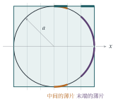

STEP I 2001，第 6 题
继续之前，请先阅读题目（原题为英文）。题目载于 STEP Support Programme 的题目资料库： step.maths.org/questions/01-s1-q6
引子
把一个球形面包切成厚度相等的薄片。靠近中间的几片是又大又厚的圆片，只有边缘一圈窄窄的面包皮；靠近两端的几片则是小小的球冠，看起来几乎全是面包皮。两端的薄片，面包皮一定比较多吧？
其实不然。不论切在靠近中间还是靠近两端的位置，每一片的面包皮面积都完全相同。中间那圈窄带周长很大，但几乎是垂直的；两端的球冠周长很小，但倾斜得很厉害，所以面包皮铺开的阔度反而较大。这两种效应恰好互相抵消。这是阿基米德（Archimedes）的一条定理，他对这条定理珍爱有加，甚至要求在自己的墓碑上刻上一个内切于圆柱（cylinder）的球（sphere）。题目的第二部分是一则较为轻松的“规例”，但它所依据的正是同一个计算。
动笔之前
半径为 \(a\) 的球，是由哪一条曲线绕 \(x\)-轴旋转而成的？该曲线的 \(\frac{\mathrm{d}y}{\mathrm{d}x}\) 是甚么？
把半圆（semicircle）\(y = \sqrt{a^2 - x^2}\), \(-a \leq x \leq a\) 旋转，便得到这个球。于是 \(\frac{\mathrm{d}y}{\mathrm{d}x} = \frac{-x}{\sqrt{a^2 - x^2}} = -\frac xy\)。请记住这一点：斜率（slope）在两端附近（\(x \to \pm a\)）很陡，在中间则很平缓，这正是引子中所描述的效应。
逐步解题
阶段 1 面包皮公式的化简
对这个半圆计算 \(y\sqrt{1 + (y')^2}\)。奇妙的事情出现了。
由于 \(y' = -x/y\)， \[1 + (y')^2 = 1 + \frac{x^2}{y^2} = \frac{y^2 + x^2}{y^2} = \frac{a^2}{y^2},\] 所以 \(y\sqrt{1 + (y')^2} = y \cdot \frac{a}{y} = a\)，竟然是一个常数！因此，任意两个平面 \(x = x_1\) 与 \(x = x_2\) 之间的面包皮面积为 \[2\pi\int_{x_1}^{x_2} a\,\mathrm{d}x = 2\pi a(x_2 - x_1).\] 它只取决于两个平面之间的距离，而与平面的位置无关。
阶段 2 面包皮与片数成正比
如果把面包切成厚度为 \(h\) 的薄片，每一片的面包皮面积都是 \(2\pi ah\)，片片相同。不论是从一端吃、从两端吃，还是从任何地方吃掉若干片，剩下的面包皮面积都是 \(2\pi ah\) 乘以剩下的片数。■
阶段 3 “脆皮”的条件
题目的提示所描述的，是从一端吃掉若干片之后剩下的面包，我们就依照提示去做：假设从 \(x = a\) 那一端开始吃，于是剩下的部分由 \(x = -a\) 延伸至 \(x = -a + t\)。一项关于“任意片数”的规定，应该不论面包切得多薄都成立，所以我们把 \(t\) 看成可以取 \(0\) 与 \(2a\) 之间的任何值。（第 4 阶段会探讨从两端吃的情况。）
利用题目给出的公式计算 \(V\)。使用代换（substitution）\(s = x + a\) 或许能令代数运算更简洁。
设 \(s = x + a\)，则 \(y^2 = a^2 - x^2 = a^2 - (s - a)^2 = 2as - s^2\)，所以 \[V = \pi\int_0^t (2as - s^2)\,\mathrm{d}s = \pi\left(at^2 - \frac{t^3}{3}\right), \qquad A = 2\pi at,\] 以及 \[\frac{V}{A} = \frac{at^2 - t^3/3}{2at} = \frac t2 - \frac{t^2}{6a}.\]
规定要求吃掉任意片数之后都有 \(V/A < 1\)，即是对所有满足 \(0 < t \leq 2a\) 的 \(t\) 都成立。在这个范围内，\(\frac t2 - \frac{t^2}{6a}\) 的最大值是多少？
对 \(t\) 求导：\(\frac12 - \frac{t}{3a} = 0\) 于 \(t = \frac{3a}{2}\) 时成立，这个值位于范围 \((0, 2a]\) 之内，而且是极大值（maximum）（该式是 \(t\) 的一条开口向下的抛物线）。最大值为 \[\frac{3a}{4} - \frac{9a^2/4}{6a} = \frac{3a}{4} - \frac{3a}{8} = \frac{3a}{8}.\] 脆皮面包需要对所有 \(t\) 都有 \(V/A < 1\)，特别是在 \(t = \frac{3a}{2}\) 时也要成立，所以 \(\frac{3a}{8} < 1\)，即 \(a < \frac83 = 2\frac23\) 米。■
阶段 4 题目之外：\(2\frac23\) 足够吗？
题目只要求找出半径必须满足的条件。\(a < \frac83\) 是否同时也足够？如果从两端吃又如何？
并不足够。从两端吃会在中间剩下一条环带，而以同样多的面包皮计算，中间的环带比末端的球冠包含更多面包。对于环带 \(-\frac w2 \leq x \leq \frac w2\)， \[V = \pi\int_{-w/2}^{w/2} (a^2 - x^2)\,\mathrm{d}x = \pi\Bigl(a^2w - \frac{w^3}{12}\Bigr), \qquad A = 2\pi aw, \qquad \frac VA = \frac a2 - \frac{w^2}{24a},\] 当环带很窄时，这个值接近 \(\frac a2\)。例如，一个半径为 \(2.4\) 米的面包，明显小于 \(2\frac23\)，切成四片后吃掉两端的两片，剩下的环带有 \(w = a\) 及 \(\frac VA = \frac{11a}{24} = 1.1\)。事实上，对于任何一组薄片都有 \(\frac VA < \frac a2\)，所以如果可以从任何地方吃掉薄片，面包是脆皮的当且仅当 \(a \leq 2\) 米。题目中的 \(2\frac23\) 是一个正确的必要条件（necessary condition），但这项规定其实比题目所透露的更为严格。
回顾
先化简，后积分。面包皮的被积函数（integrand）看似复杂，结果却是常数。动手积分之前，务必先把被积函数化简。
仔细阅读“任意”二字。条件必须在吃掉任意片数之后都成立，所以我们需要的是 \(V/A\) 的最大值，而不是整个面包的值（即 \(\frac a3\)）。
简单的计算，出人意表的答案。“面包皮相等”这个性质听起来难以置信，但计算只有两行。
背后的数学
阿基米德在《论球与圆柱》（On the Sphere and Cylinder）中证明了：球面上夹在两个平行平面之间的环带，其面积等于这两个平面在包裹球的圆柱上所截出的环带的面积（图 4.8.1）。我们的计算正是这条帽盒定理（hat-box theorem）：半径为 \(a\) 的圆柱每单位长度的面包皮面积为 \(2\pi a\)，球也是如此。考虑整个球，它的表面积（surface area）等于圆柱的曲面面积，即 \(2\pi a \times 2a = 4\pi a^2\)。阿基米德认为，这个结果连同“球的体积是圆柱体积的三分之二”这一事实，是他毕生最出色的成就。西塞罗（Cicero）于公元前 75 年到访叙拉古（Syracuse）时，正是凭着寻找刻在墓上的球与圆柱，找到了那座杂草丛生的坟墓。

地球的地图
帽盒定理提供了一种绘制保持面积不变的地球地图的方法。把地球仪上的每一点沿水平方向向外投影到包裹它的圆柱上，然后把圆柱摊开。球面上的环带会映射到圆柱上面积相同的环带，而任何区域也是如此。这就是兰伯特（Lambert）圆柱等积投影（Lambert’s cylindrical equal-area projection，1772 年）。它在两极附近会令形状严重失真，但面积是如实的，不像人们熟悉的麦卡托（Mercator）投影那样，令格陵兰看起来与非洲一样大（其实格陵兰大约只有非洲的十四分之一）。高斯（Gauss）有一条著名的定理，称为“绝妙定理”（Theorema Egregium，1827 年），它说明没有任何球面地图可以同时保持面积和形状：每一幅平面的地球地图都必定有所失真。
球面上的随机点
以下是一个实际的应用。要在球面上均匀（uniformly）随机地选取一点，你或许会尝试均匀地选取纬度（latitude）和经度（longitude），但这样会令点在两极附近过于密集。帽盒定理给出了正确的做法：在 \(-a\) 与 \(a\) 之间均匀地选取高度 \(x\)，并在 \(0\) 与 \(2\pi\) 之间均匀地选取经度。由于面积与高度成正比，这样选出的点恰好是均匀分布的。物理学和电脑图像的电脑模拟都采用这个方法。（值得一提的是，这个方法只在三维空间中有效：对于四维或更高维的球面，相应的命题并不成立。）
思维技巧
当计算得出出乎意料地简单的结果（例如一个常数）时，请停下来问一问为甚么。背后通常有几何上的原因，而找出这个原因，才是真正理解之所在。
在这里，被积函数 \(y\sqrt{1 + (y')^2}\) 是常数，因为在球面上，陡峭程度与离轴的距离恰好互相补偿：这就是阿基米德的定理。
延伸练习
整个面包。证明对于整个未切开的面包，\(V/A = \frac a3\)。为甚么题目中的条件比 \(\frac a3 < 1\) 更难满足？
热带地区。地球表面有多大比例位于南纬 \(23.4^\circ\) 与北纬 \(23.4^\circ\) 之间？（把地球视为一个球。由于面积与高度成正比，你只需要用到 \(\sin 23.4^\circ\)。）
其他形状。证明对于抛物面（paraboloid）形状的面包（把 \(y = \sqrt x\) 绕 \(x\)-轴旋转），每片的面包皮并非常数。对于哪些曲线 \(y(x)\)，\(y\sqrt{1 + (y')^2}\) 是常数？（解出相应的微分方程（differential equation）。）
体积。利用体积公式，证明球的体积是包裹它的圆柱体积的三分之二，正如阿基米德所发现的那样。
延伸阅读
Sherman Stein, Archimedes: What Did He Do Besides Cry Eureka?（Mathematical Association of America）。为现代读者讲解阿基米德的数学。
Timothy Gowers, Mathematics: A Very Short Introduction（Oxford University Press）。书中关于几何的一章介绍了曲面的几何。
John Snyder, Flattening the Earth（University of Chicago Press）。两千年来的地图投影史。